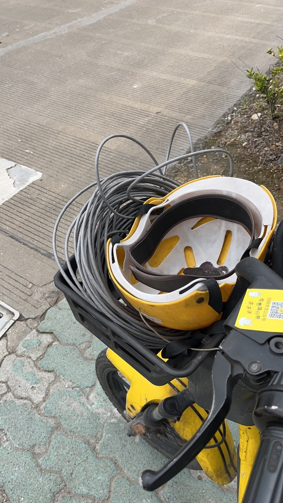
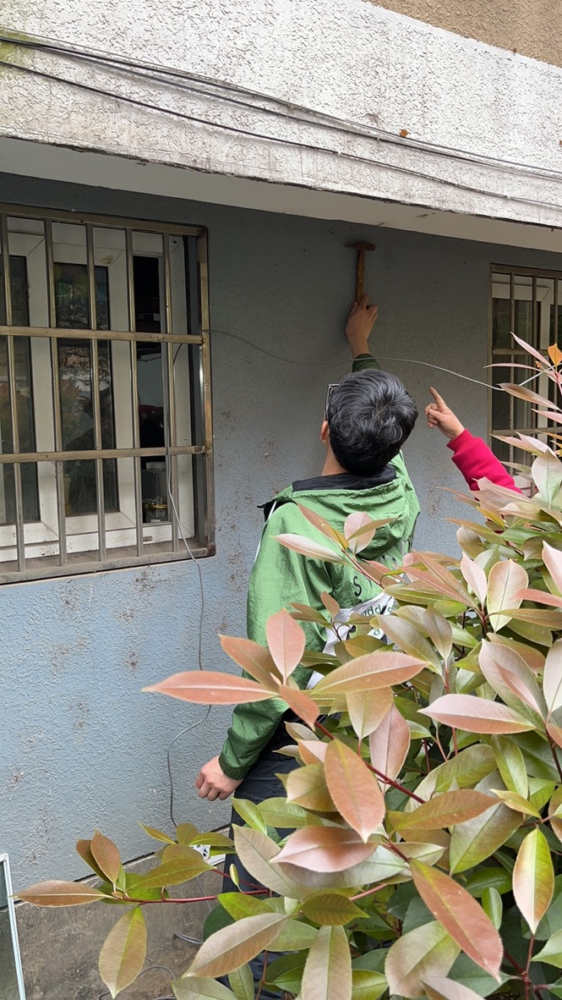

记录一次上门打散工
记录一次上门打散工
壬寅年头磨难多
人间规则奈吾何
吟诗为把瘟神送
风起大江扬洪波
疫情减弱，遍邀亲友，无人相约，但闻昔日挚友，感怀往事邀吾往之。欲把殷勤牵挂诉，幸之。遂至友舍，诉之：帮忙装个监控吧～
买物料
和朋友两个人出发，帮朋友邻居家装个监控，他这个监控是要求装在车库里，但是网线要从 4 楼下放下去。所以，我们首先要出门购买一下物料：
- 带 RJ45 接口监控
- 足够长的网线
走了 10000 多步人都走傻了～

布线
这个没啥好说的，纯粹体力活，感谢朋友的暴风之锤，提高了工作效率，加快了项目进度 
感谢
感谢朋友，给我这次项目实践和锻炼的机会让我认识到了自己的能力的不足～
欢迎关注我的博客www.jobcher.com